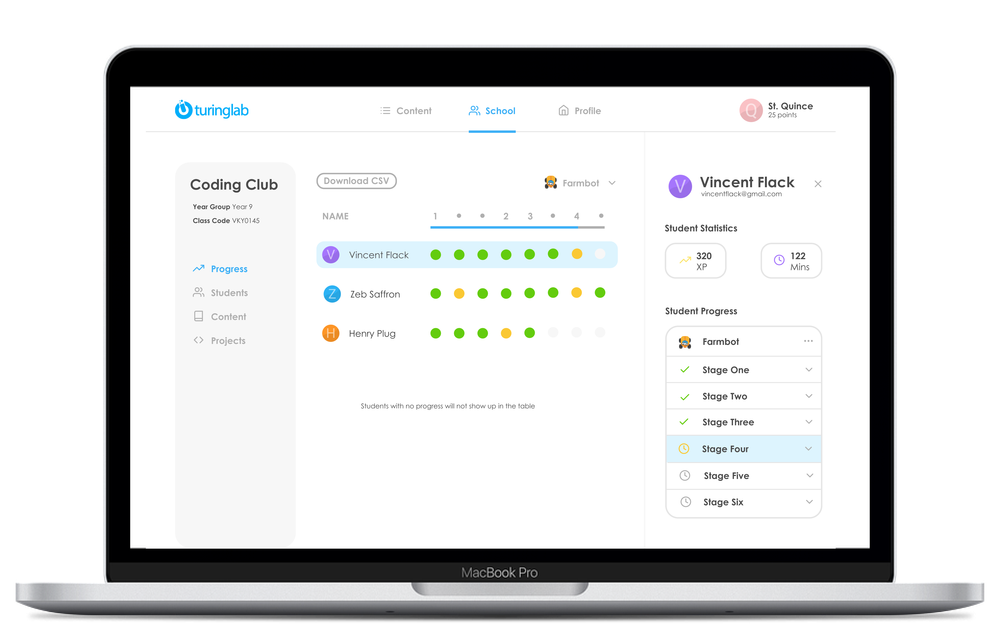
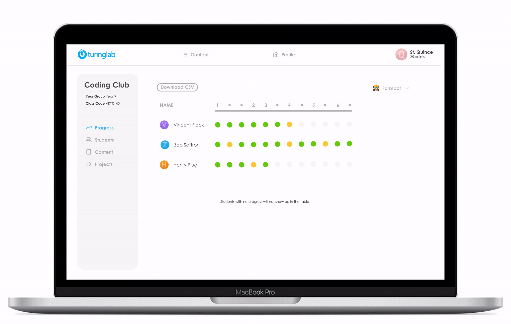
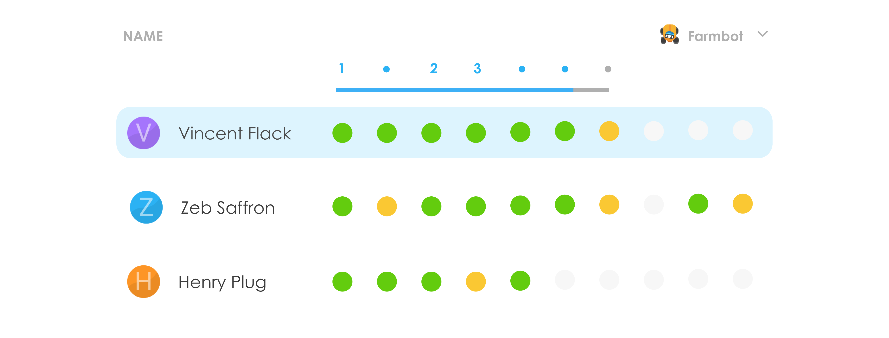
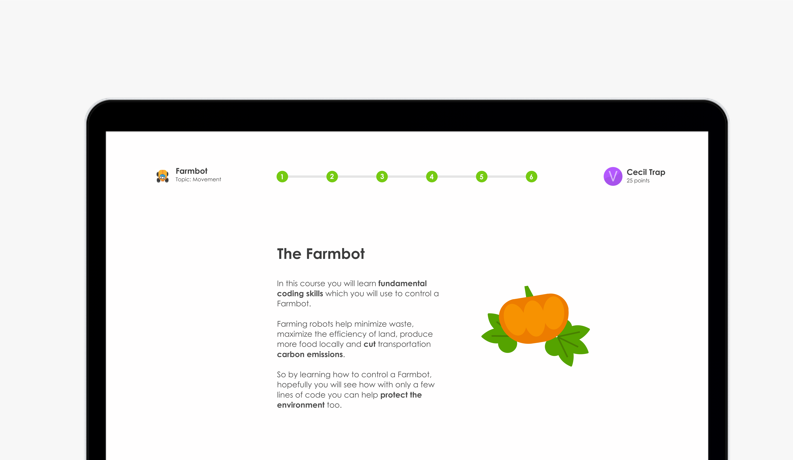
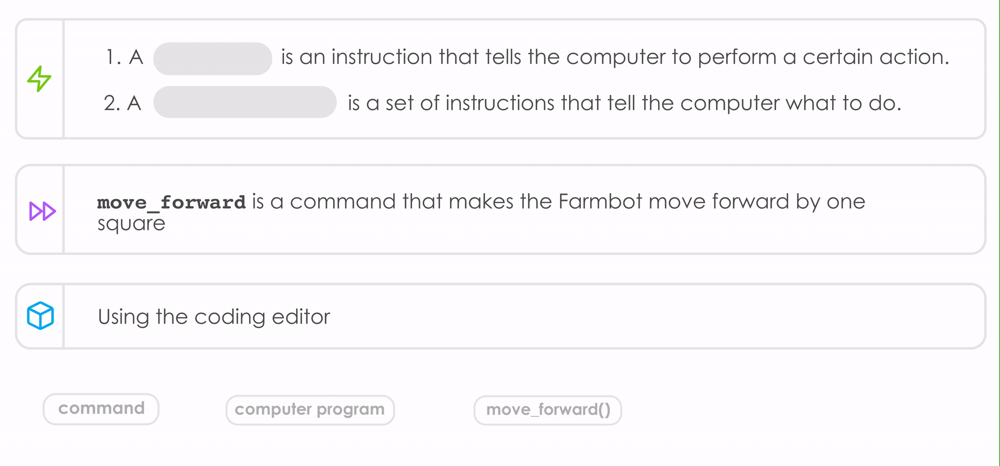

Responding to user interviews I redesigned part of Turinglab's teaching platform so that teachers would be able to easily keep track of how their class was progressing through Turinglab content and identify where students were struggling.
I conducted the user research for the project and used Figma to come up with a series of prototypes - the new design for the platform was implemented by Turinglab's developers.

One of the new features was a progress chart, where teachers could clearly see the progress made by their entire class on a specific course.
If a student was stuck on the course the teacher would be able to look at the student's statistics and identify the specific slide causing difficulty by clicking through a drop-down menu.

Below is an example of the progress chart. The green circles show completion and the orange circles indicate help is needed.

Teachers also suggested that their students were skipping through important slides which despite not having a task consolidated their knowledge.

I repurposed some of Turinglab's old illustrations to make slides visually appealing and also designed a feature which required students to click on missing words to complete definitions and summaries
